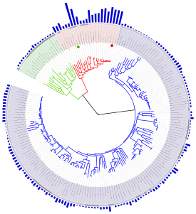

2. Эволюционное дерево
|
 Филогенетическое дерево с указанием размера геномов. |
Классификация живых организмов представляет собой многоуровневую иерархическую структуру: организмы делятся на царства, царства делятся на типы, типы — на классы, классы — на отряды, и так далее. В результате такого ветвления получается филогенетическое дерево. Наличие единственной (естественной) классификации означает, что существует объективная закономерность в основе этой классификации. Именно такой результат можно ожидать при эволюционном происхождении животных от общего предка. Ветвление филогенетического дерева соответствует делению популяций в процессе видообразования.
Несмотря на многочисленные разногласия между биологами по поводу отнесения тех или иных видов к конкретным группам (таксонам), эти противоречия имеют частный характер. Практика показывает, что биологические классификации, построенные на основе разных признаков (морфологических, эмбриологических, биохимических или генетических) в тенденции стремятся к одной и той же древовидной иерархической схеме - естественной классификации, отражающей последовательность расхождения эволюционных линий. Чем больше признаков учитывается в ходе классификации, тем выше сходство получаемых деревьев. Наличие естественной классификации было очевидно биологам еще в додарвиновские времена, и это изначально трактовалось как свидетельство иерархической организации замысла Творца. Однако в разнообразии других природных объектов, которые, в отличие от живых организмов, не происходят от общего предка, отсутствует единая древовидная иерархическая структура. Классификация таких объектов либо получается принципиально различной при использовании разных наборов признаков (например, минералы), либо имеет принципиально не "древесный" вид (например, химические элементы, звезды). Невозможно объективно построить иерархию элементарных частиц, химических элементов, планет Солнечной системы. Также не существует объективной иерархии таких сознательно созданных объектов, как книги в библиотеке, дома, мебель, машины и т. д.. Можно при желании объединять эти объекты в произвольные иерархии, но нет единственной объективной иерархии, принципиально лучшей, чем все остальные.
Если бы была верна концепция "бараминов", естественная классификация и филогенетические деревья, получаемые на основе различных признаков и статистических методов, должны были бы иметь весьма характерный вид: изолированные пучки коротких ветвей (барамины) должны были бы отделяться друг от друга очень длинными (точнее, имеющими абсолютно произвольную длину) ветвями. Этого не наблюдается. Длины ветвей филогенетического дерева (отражающие, в первом приближении, степень различий по используемым признакам) в среднем примерно одинаковы между видами одного рода, родами одного семейства, семействами одного отряда и т.д. Это обстоятельство является дополнительным свидетельством в пользу того, что между процессами появления новых видов, родов, семейств, отрядов, классов, типов и т.д. не существует принципиальной разницы. Каждый новый род изначально появляется "всего лишь" как новый вид, и лишь позже, в ретроспективе, может "заслужить" в глазах биологов статус рода.
Кроме того, если бы в идее "бараминов" было хоть какое-то рациональное зерно, этого не могли бы не заметить специалисты по систематике животных и растений еще задолго до Дарвина. Они бы обязательно увидели, что один из надвидовых таксономических рангов (род, отряд или семейство - антиэволюционисты обычно утверждают, что их "барамины" соответствуют каким-то из этих рангов) радикально отличается от всех остальных. Например, они бы увидели, что животный мир четко делится на семейства, которые поэтому являются особым, "естественным" уровнем классификации (и соответствуют "богосотворенным родам"), и гораздо менее четко делится на роды, подсемейства, надсемейства, отряды, подклассы и т.д., которые никаким "богосотворенным родам" не соответствуют. В действительности все ранги биологической классификации имеют примерно одинаковую степень как "четкости", так и "расплывчатости". По-настоящему "естественной" единицей классификации безоговорочно признается лишь вид (по критерию полного или почти полного отсутствия скрещиваний с другими видами в природе), но барамин по определению - это не вид, а нечто большее. Однако никакого надвидового ранга, более "естественного", чем остальные, в природе не существует.
Существуют различные статистические методы для точной оценки того, насколько объекты с разными свойствами укладываются в ту или иную иерархию. Эти методы измеряют так называемый «филогенетический сигнал», позволяя отличить мнимые закономерности от объективных. Например, у любого «генеалогического древа» автомобилей будет низкий уровень филогенетического сигнала. У эволюционного дерева и у различных его частей, напротив, стабильно четкий филогенетический сигнал.
Есть несколько источников данных, на основе которых можно делать выводы о степени родства между видами. Если существует единое эволюционное дерево, объединяющее все виды в объективную генеалогию, то все данные должны подтверждать эту генеалогию. Филогенетические деревья, построенные независимо, должны соответствовать друг другу. Наиболее простой, хотя и не очень точный способ построить такое дерево — сравнение строения организмов животных: чем меньше различий между видами, тем меньше поколений отделяют их от общего предка. Палеонтологическая летопись, наряду с другими подходами, позволяет установить родство между классами животных. Например, найденные останки пернатых динозавров свидетельствуют о родстве между рептилиями и птицами. Биогеография и эмбриология также дают информацию об эволюционной близости видов. Наиболее точный источник данных, недоступный во времена Дарвина — сравнительный анализ геномов различных организмов. Эволюционное дерево можно построить по каждому отдельно взятому гену, также исследователи рассматривают всевозможные некодирующие последовательности. Практика показывает, что чем больше генов включается в анализ, тем меньше остается в дереве статистически слабо обоснованных участков, и тем меньше различия между деревьями, построенными по разным наборам генов.
Все эти источники информации дают одинаковую картину с точностью до погрешности используемых методов. Тот факт, что эволюционные деревья, построенные по разным данным, соответствуют друг другу, элементарно объясняется эволюционной теорией. Другие объяснения отсутствуют: например, нет никаких причин, почему организмы, сходные по строению, должны иметь сходные некодирующие последовательности в геноме (интроны в одних и тех же местах генов, остатки встроившихся ретровирусов в одних и тех же местах генома и т.д.), если они не произошли от одного предка.
Примеры биологических исследований, связанных с построением эволюционных деревьев:
- Новые данные позволили уточнить родословную животного царства
- Невероятное разнообразие жуков получило эволюционное объяснение
- Геном ланцетника помог раскрыть секрет эволюционного успеха позвоночных
- Найдено «недостающее звено» между членистоногими и загадочными кембрийскими чудовищами аномалокарисами
- Доказан скачкообразный характер эволюционного процесса
Горизонтальный перенос генов, межвидовая гибридизация и симбиогенез порождают горизонтальные перемычки между некоторыми ветвями эволюционного дерева, особенно в его "нижней" части - у прокариот. Это, однако, не разрушает его общую древовидную (иерархическую) структуру, потому что вертикальная передача генов (от родителей к потомкам) у всех живых организмов резко преобладает над горизонтальной.
Лингвистическая эволюция как аналог биологической
Эволюция языков отчасти похожа на эволюцию биологических видов, хотя это сходство не следует преувеличивать. Лингвистическая эволюция в основном нейтральна, т.е. не имеет приспособительного характера (нельзя утверждать, например, что грамматика чукотского языка более приспособлена к холодному климату, чем грамматика африканских языков). В биологической эволюции, впрочем, тоже велик элемент нейтральности. Построение эволюционных деревьев в биологии осуществляется чаще всего на основе именно нейтральных признаков (потому что приспособительные признаки - менее надежное свидетельство родства; они часто могут возникать у неродственных форм в сходных условиях в результате одинаковой направленности отбора). Специалисты по исторической лингвистике активно и весьма успешно используют математические методы построения эволюционных деревьев, разработанные биологами (подробнее см. в заметке Лингвистическая эволюция сходна с биологической).
Аналогия с эволюцией языков полезна нам прежде всего потому, что она помогает лучше понять два ключевых свойства биологической эволюции: ее постепенность и относительную дискретность видов.
Постепенность. Языки, как и биологические виды, эволюционируют путем накопления мелких изменений. Один язык (например, латынь) превращается в другой (например, итальянский) не сразу, а постепенно. Каждое следующее поколение говорит лишь немного иначе, чем предыдущее. Не бывает так, чтобы родители, говорящие, к примеру, на латыни, родили детей, которые, научившись говорить, вдруг заговорили по-итальянски. Так же и в эволюции видов: родители одного вида не могут родить детенышей, относящихся уже к другому виду. Переход между видами во времени происходит плавно и незаметно; резкие различия проявляются, только если сравнивать между собой конечные звенья длинной цепи постепенных изменений.
Дискретность видов. Несмотря на множество наблюдаемых в природе случаев плавных переходов между видами, разнообразных гибридных зон, кольцевых видов и т.п. (см. в разделе "Наблюдаемая эволюция"), большинство существующих видов все-таки достаточно дискретны, т.е. имеют довольно четкие границы. Обычно мы можем однозначно определить видовую принадлежность животного или растения. Между большинством видов есть заметные "разрывы" (хиатусы) в пространстве признаков. Антиэволюционисты иногда ставят это в упрек эволюционному учению, утверждая, что если бы эволюция действительно происходила, мы не должны были бы наблюдать никакой дискретности в видовом разнообразии, а только сплошные плавные переходы.
Наблюдаемая дискретность видов во многом определяется дискретностью экологических условий и пониженной приспособленностью промежуточных форм. Например, в тайге условия одни, среди арктических льдов - другие, к первым условиям лучше приспособлен бурый медведь, ко вторым - белый. Промежуточные формы в обоих биотопах будут проигрывать в конкурентной борьбе живущим там специалистам. О таком механизме формирования дискретности, основанном на пониженной конкурентоспособности промежуточных форм, писал еще Дарвин. Дополнительное объяснение дискретности можно получить из аналогии с языками.
Языки тоже в основном дискретны. Конечно, в зонах смешения разноязычных народов иногда формируются гибридные диалекты (аналог гибридных зон в биологии), но все-таки это не типично. Большинство людей говорит на вполне определенном языке, а не на каких-то смешанных диалектах. Главная причина дискретности в биологии и лингвистике, по-видимому, одна и та же. Человеку выгодно уметь свободно и полноценно обмениваться информацией с достаточно большой популяцией себе подобных. Говорить на смеси русского и немецкого очень неудобно: плохо будут понимать и русские, и немцы. Живым организмам точно так же выгодно уметь свободно и полноценно обмениваться генами (смешивая их в потомстве) с достаточно многочисленной группой особей. В пределах каждого генофонда гены под действием отбора становятся "притертыми", приспособленными друг к другу. Иметь в своем геноме смесь генов, приспособленных к разным генофондам, в общем случае невыгодно, потому что потомство такого организма от скрещивания с любой из "чистых" форм, скорее всего, будет иметь пониженную жизнеспособность. Необходимость (выгодность) свободного обмена информацией (словесной или генетической) в пределах достаточно больших популяций в тенденции приводит к формрованию и поддержанию наблюдаемой дискретности. В природных условиях довольно часто возникают межвидовые гибриды, но число их, как правило, остается небольшим, а их потомство в будущем может постепенно распасться на практически "чистых" представителей двух исходных видов. Попадая в генофонд вида А, смешанный набор генов гибридной особи будет под действием отбора постепенно очищен от "посторонних примесей", так что в итоге в генофонде останутся только гены, хорошо "приспособленные" именно к этому генофонду. То же самое произойдет и с теми генами гибрида, которые будут подвергаться отбору в пределах генофонда Б. Именно поэтому межвидовая гибридизация, как правило, не приводит к слиянию двух разошедшихся видов в один.